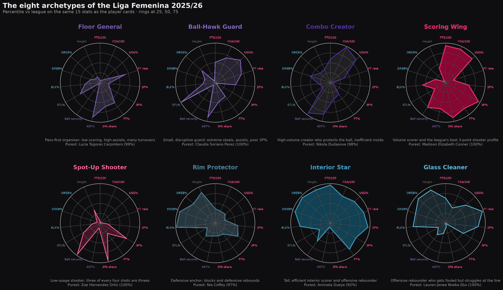
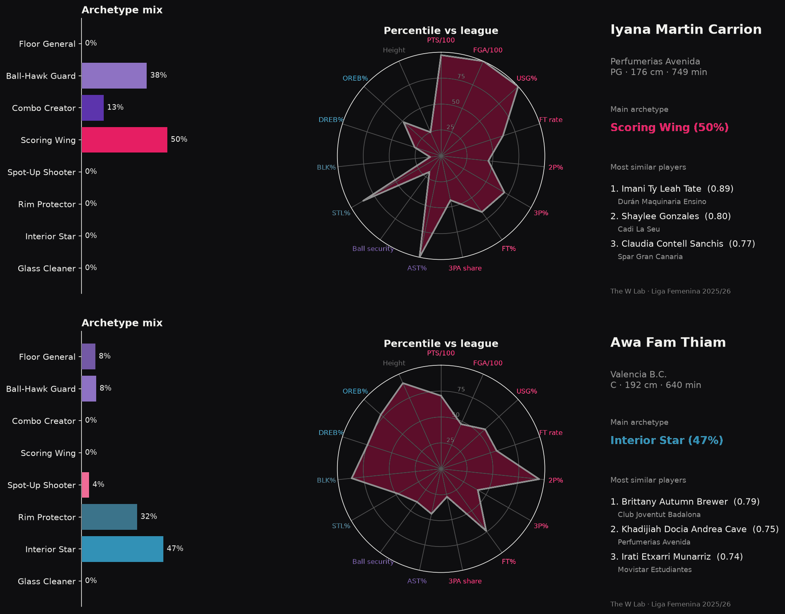
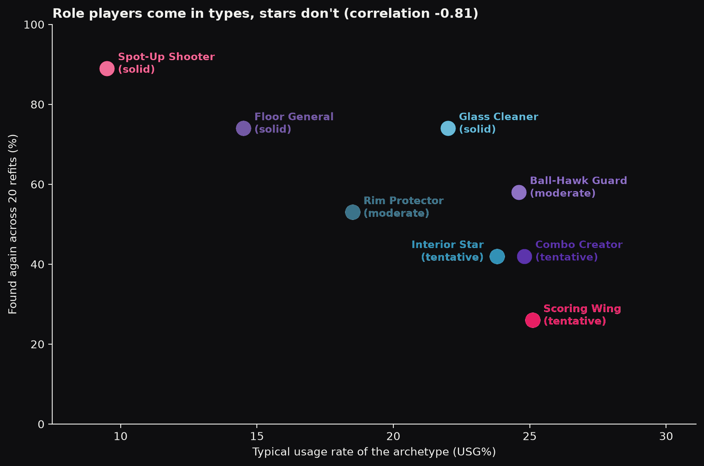
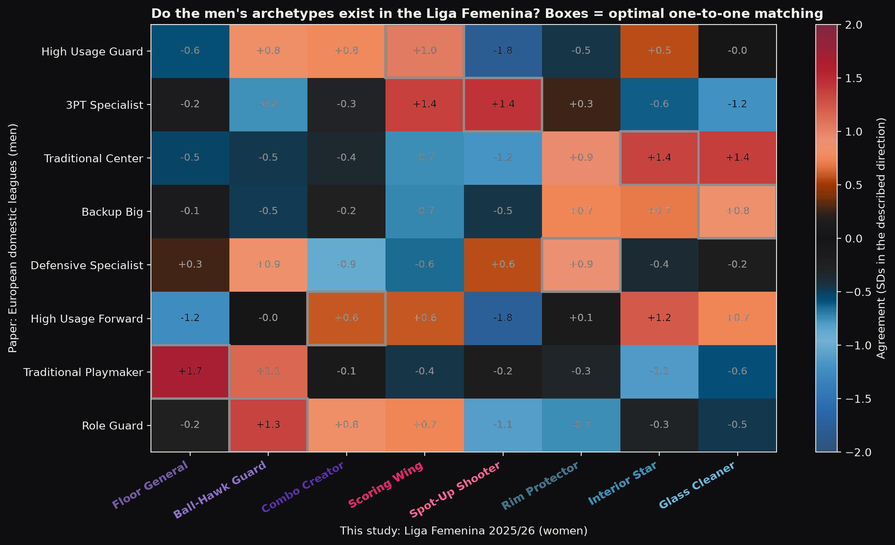
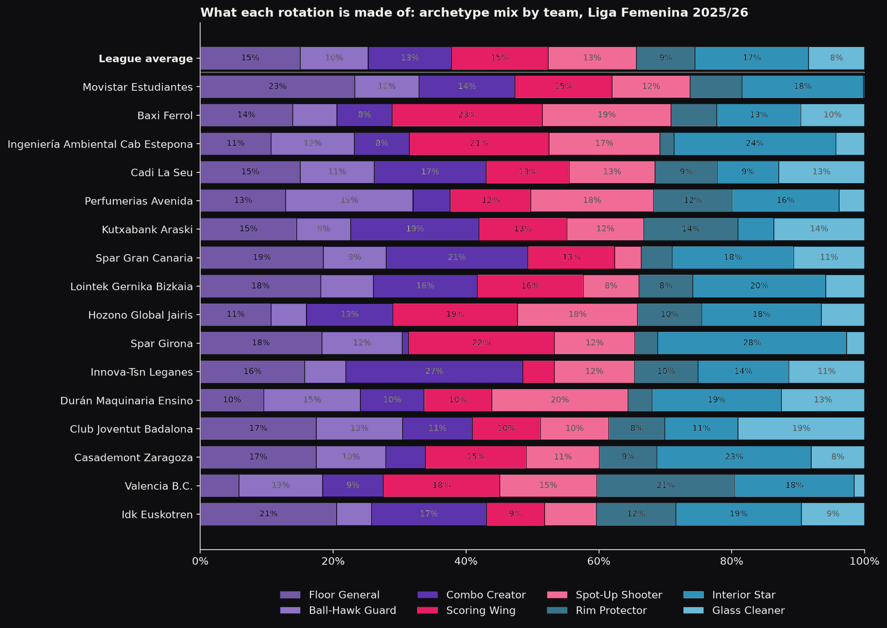
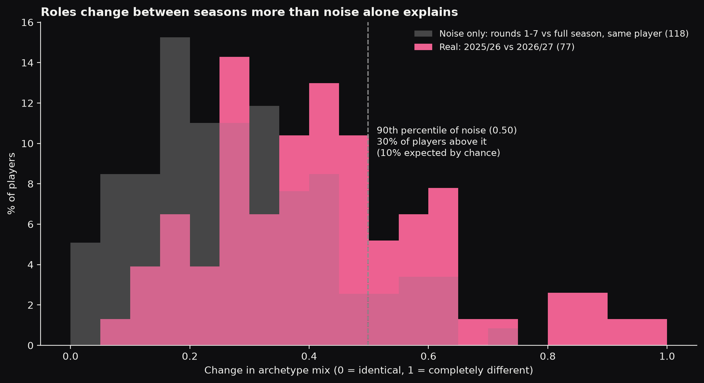
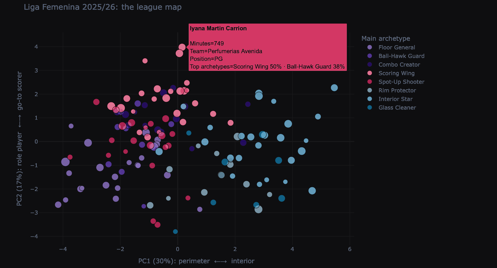

At a glance
Nia Coffey is listed as a small forward. On the court, she is something else entirely: 97% Rim Protector, one of the purest shot-blockers in the Liga Femenina.
Chloe Bibby is listed as a power forward. She plays as an 80% Scoring Wing.
That gap between the label and the game is where this project started. Positions tell you where a player stands at tip-off. They don’t tell you what she does. In the 2025/26 Liga Femenina Endesa, only 49% of what small forwards do on court actually fits the wing family of roles. For centres, the label works much better: 81%. In between, every position leaks.
So what should we use instead?
The paper that started it
At the MIT Sloan Sports Analytics Conference 2026, Marlin Myrte, Sebastian Buzzalino and Thierry Aymerich presented Scouting Anyone: Probabilistic Player Archetypes for Any League. Their idea is simple and powerful:
- find the extreme playing styles that exist in a league (the archetypes);
- describe every player as a mix of them, with percentages that add up to 100%;
- use only public box-score stats, so it works even in leagues with little data.
They built eight archetypes from seven men’s European leagues (including the Spanish ACB) and the NBA, and presented the method as valid for any league.
No women’s league was tested. So I took their exact recipe and applied it to the Liga Femenina Endesa, asking three questions:
- Do the men’s archetypes exist in the women’s game?
- Are the archetypes stable enough to trust?
- Do they hold when we look at a new season?
Building the data
Everything comes from the official website of the Spanish Basketball Federation (FEB). I wrote a Python scraper that reads every box score of the season, game by game:
- 296 games over two seasons (the full 2025/26 regular season and the first seven rounds of 2026/27);
- 5,783 player-game rows, every one checked against the federation’s official totals.
It took a few attempts. The first version read team rosters, but rosters only list current players, so anyone who had left mid-season vanished (Valencia came out 103 points short). Past seasons were hidden behind a web form that ignored the URL. And the 2025/26 box scores of Movistar Estudiantes are missing 372 points at the source itself, a gap I documented rather than patched.
How the model works
Each player is described by the same 15 stats as in the paper, all adjusted for minutes and pace:
| Group | Stats |
|---|---|
| Scoring | Points and shots per 100 possessions, usage rate, free-throw rate, 2P%, 3P%, FT%, share of shots from three |
| Creation | Assist rate, turnover rate |
| Defence | Steal rate, block rate |
| Rebounding | Offensive and defensive rebound rates |
| Size | Height |
Two details matter:
- Shooting percentages are corrected for small samples. A player who goes 5-for-8 from three looks elite on almost no evidence, so each percentage is pulled towards the league average until there are enough attempts to trust it. My first run skipped this, and some archetypes were built around lucky shooters.
- Only players with 300+ minutes enter the model, as in the paper: 142 player-team stints.
The technique, Archetypal Analysis, looks for the corners of the data rather than its centre. Compared with K-Means, the usual clustering method, it explains far more of how players differ: 69.5% against 49.6%.
Eight ways to play
The model found five perimeter archetypes and three interior ones. Six of them are so extreme that a real player sits almost exactly on top of them:
| Archetype | What defines her | The purest example |
|---|---|---|
| Floor General | Assists on one in four of her teammates’ baskets; scores little; uses only 14.5% of possessions | Lucía Togores (99%) |
| Ball-Hawk Guard | The league’s most extreme stealer (6.1% of opponent possessions); also a playmaker; 170 cm | Claudia Soriano (100%) |
| Combo Creator | High volume (23.7 shots per 100), protects the ball, struggles inside (39% from two) | Nikola Dudasova (98%) |
| Scoring Wing | 28 points per 100, the best three-point profile (39%), 60% of shots from deep | Madison Conner (100%) |
| Spot-Up Shooter | Barely touches the ball (9.5% usage); three of every four shots are threes | Zoe Hernández (100%) |
| Rim Protector | Blocks 3.8% of opponent twos; strong defensive rebounder | Nia Coffey (97%) |
| Interior Star | The league’s top scorer profile: 29 points per 100, 56% from two, elite offensive rebounding | Aminata Gueye (92%) |
| Glass Cleaner | Crashes the offensive glass, gets to the line, but shoots 51% from it | Lauren Ebo (100%) |

The eight archetypes of the Liga Femenina 2025/26, as percentiles against the league, with the purest player of each.
Most players are a mix
Here’s the real point of the method: 59% of the league has no archetype above half of their game. The typical player is a blend.
Take Iyana Martín (Perfumerías Avenida): 50% Scoring Wing, 38% Ball-Hawk Guard, 13% Combo Creator, 0% Floor General. Her profile sits near the top of the league in usage, shots, points, assists and steals, and in the bottom quarter for ball security. A point guard who scores, passes and pressures, and organises nothing like a traditional point guard.
Every one of the 142 players in the sample has her own card, with her mix, a percentile radar and her three most similar players across the league. Iyana’s closest match is Imani Tate, with a similarity of 0.89.

Two of the 142 player cards: Iyana Martín (Perfumerías Avenida) and Awa Fam Thiam (Valencia).
Role players come in types. Stars don’t.
To know which archetypes are real and which are accidents of one model run, I refitted the model 20 times from different starting points and checked how often each archetype came back.
| How stable | Archetype | Found again |
|---|---|---|
| Solid | Spot-Up Shooter | 89% |
| Solid | Floor General | 74% |
| Solid | Glass Cleaner | 74% |
| Moderate | Ball-Hawk Guard | 58% |
| Moderate | Rim Protector | 53% |
| Tentative | Combo Creator | 42% |
| Tentative | Interior Star | 42% |
| Tentative | Scoring Wing | 26% |
The pattern follows how much each archetype uses the ball (correlation of −0.81). There is a typical way to be a spot-up shooter or a pass-first point guard. But every player who carries an offence does it her own way, so the model can’t pin down a single “star” type.

How often each archetype came back across 20 refits, against how much it uses the ball.
Same game, different shape
Now the big question: do the men’s archetypes exist in the Liga Femenina?
The paper describes its archetypes in words (“high assist rate, low scoring…”), so I translated each description into the same 15 stats and measured how closely each of our archetypes matches each of theirs. Then I tested whether the matches held when the translation was changed.
| Men’s archetype (paper) | Liga Femenina match | How robust |
|---|---|---|
| Traditional Playmaker | Floor General | 100% |
| 3PT Specialist | Spot-Up Shooter | 94% |
| High Usage Guard | Scoring Wing | 97% |
| High Usage Forward | Interior Star | 100% |
| Defensive Specialist | Rim Protector | 94% |
| Traditional Center and Backup Big | Glass Cleaner | 91% |
| none | Combo Creator | no men’s equivalent |

Agreement between the paper’s men’s archetypes (rows) and the Liga Femenina archetypes (columns). Boxes mark the best one-to-one match.
What this tells us:
- Role players look the same in both games. The pass-first point guard and the spot-up shooter are almost identical, and they are also our most stable archetypes.
- The paint is organised differently. Both of the men’s centre types point to the same player type here. Our Interior Star behaves like a men’s scoring forward, not a centre. And protecting the rim is a specialist’s job, not the classic big’s.
- Creation is shared. What the men’s model treats as one primary ball-handler spreads across three of our archetypes.
- Defence comes with the ball. The league’s best stealers are high-usage playmakers, not low-usage defensive specialists.
- One type is new. The Combo Creator matches none of the men’s archetypes: a role that may be specific to the women’s game.
What each team is made of
Add up the mixes of every player in a rotation, weighted by minutes, and you get a team’s fingerprint. Every team contains all eight archetypes; identity comes from one block worth about one player.
| Team | Signature | Team share | League average |
|---|---|---|---|
| Spar Girona | Interior Star | 28% | 17% |
| Innova-TSN Leganés | Combo Creator | 27% | 13% |
| Movistar Estudiantes | Floor General | 23% | 15% |
| Baxi Ferrol | Scoring Wing | 23% | 15% |
| Valencia B.C. | Rim Protector | 21% | 9% |
| Club Joventut Badalona | Glass Cleaner | 19% | 8% |

What each rotation is made of: archetype mix by team, weighted by minutes, with the league average on top.
The champion’s blueprint
Valencia, the 2025/26 champion, built their title from the rim out:
- twice the league’s share of Rim Protectors, through María Pérez Araujo, Raquel Carrera and Nia Coffey;
- almost no classic Floor General (6% against 15%): their three point guards, Leticia Romero, Hind Ben Abdelkader and Ivon Anderson, all profile as scorers;
- almost no specialist rebounders: the boards came from bigs who also protect the rim and score;
- a deep rotation: eleven players over 300 minutes, none above 650.
And this season?
I projected the first seven rounds of 2026/27 onto the same model, with no refitting. At first sight, 45% of players had changed archetype. But seven games is a small sample, so I measured how much a player’s mix moves by pure chance: comparing the first seven rounds of last season with the full season, for the same players on the same teams.
The answer is sobering: noise alone changes the main archetype of 39% of players. Early-season labels are unreliable.
But the mix itself moves more between seasons than chance explains, and 30% of players change role beyond the noise threshold, three times what chance would produce. The biggest movers, like Moira Joiner, Alessandra Orsili and Veronika Voráčková, change more than noise ever does. Players who switched clubs change a bit more, but roles shift even for those who stayed.

Grey: how much a mix moves by chance alone after seven games. Pink: how much it moves between seasons.
So, does it work for any league?
The method does. The archetypes don’t travel as a fixed list.
With nothing but public box scores, the model finds clear, stable, interpretable roles in a women’s league, with the same quality as in the men’s game. But the map of roles is different: the Liga Femenina shares the men’s role players, organises its paint differently, splits its creators, and has at least one role of its own.
The practical lesson for any scout or analyst: don’t import the labels, refit the model on your own league.
What’s next
This is the first version. Next steps include testing the model without each archetype’s “anchor” player, pooling several seasons, and adding lineup data to answer the question coaches really care about: which combinations of archetypes win?
Read the full study

The interactive league map: every player positioned by playing style, with a slider from 2025/26 to 2026/27.
- 📄 The paper: Any League? Probabilistic Player Archetypes in Women’s Basketball
- 💻 The code and all 142 player cards: github.com/tomascosta7/any-league-archetypes
- 🗺️ The interactive league map: explore it here
Which archetype is your favourite player? Tell me, and I’ll share her card.
This is an independent project, not affiliated with the FEB or the Liga Femenina Endesa. Data: baloncestoenvivo.feb.es.